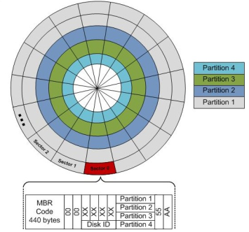
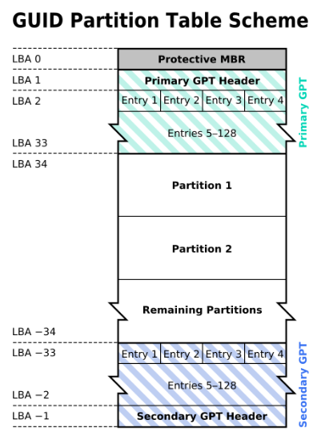
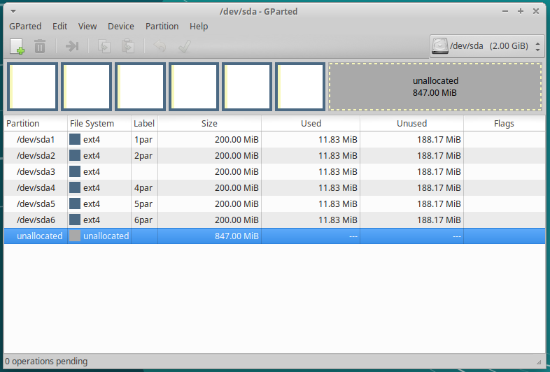

Particiones¶
Existen muchos tipos de sistemas de archivos. En la siguiente tabla vemos algunos de los más famosos:
Sistema archivos |
archivo (máx.) |
partición (máx.) |
SO Utilizado |
Soporta Usuarios |
|---|---|---|---|---|
FAT16 |
2GB |
2GB |
Windows |
NO |
FAT32 |
4GB |
2TB |
Windows |
NO |
NTFS |
~ TB |
~ EB |
Windows |
SI |
EXT3 |
2 TB |
32TB |
GNU/Linux |
SI |
EXT4 |
~ TB |
~ EB |
GNU/Linux |
SI |
Para implementar un sistema de archivos tendremos que crear una Tabla de particiones. Una tabla de particiones es un índice que divide el espacio de almacenamiento en distintas secciones, llamadas particiones, y que da ciertas características de cada partición, como por ejemplo el sistema de ficheros usado en ella o si la partición es arrancable, de solo lectura,… Hay distintos alternativas para definir la tabla de particiones, veremos a continuación la tabla de particiones en el MBR, también llamada tabla de particiones DOS. Usada en IBM PC y compatibles con sistemas BIOS y GUID Partition Table propuesta por la especificación EFI y permite ser usada por IBM PC y compatibles con BIOS y con UEFI.
Tabla de particiones en el MBR¶
El MBR “Master Boot Record” es el primer sector («sector cero») de un dispositivo de almacenamiento de datos, es decir que representan los 512 primeros bytes del disco. Los primeros 446 bytes y la tabla de particiones en los últimos 64. Para este sistema de particiones existen 3 tipos diferentes de particiones:
Partición primaria: Son las divisiones crudas o primarias del disco, solo puede haber 4 de éstas o 3 primarias y una extendida.
Partición extendida: También conocida como partición secundaria es otro tipo de partición que actúa como una partición primaria; sirve para contener múltiples unidades lógicas en su interior. Fue ideada para romper la limitación de 4 particiones primarias en un solo disco físico. Solo puede existir una partición de este tipo por disco, y solo sirve para contener particiones lógicas. Por lo tanto, es el único tipo de partición que no soporta un sistema de archivos directamente.
Partición lógica: Ocupa una porción de la partición extendida o la totalidad de la misma, la cual se ha formateado con un tipo específico de sistema de archivos (FAT32, NTFS, ext2,…) y se le ha asignado una unidad, así el sistema operativo reconoce las particiones lógicas o su sistema de archivos. Puede haber un máximo de 23 particiones lógicas en una partición extendida
Un disco duro puede contener un máximo de 4 particiones primarias o 3 particiones primarias y una extendida. Una partición extendida contiene un número “n” de particiones lógicas, solo puede existir una sola partición de este tipo en el disco duro. Las particiones lógicas se crean dentro de una partición extendida.
Ejemplos de particionados:
Sistema GNU/Linux en un disco de 500 GB.
1º Partición primaria de 80GB con formato ext4 y punto de montaje / (en esta partición estarán los archivos del SO)
2ª Partición primaria igual que la memoria RAM (4G) que tenga el equipo con formato swap (se usa para la memoria virtual temporal)
3º Partición primaria 415 GB con formato ext4 y punto de montaje /home (contiene la configuración y datos de los usuarios)
Sistema Windows en un disco de 500 GB
1º Partición primaria de 80 GB con formato ntfs (en esta partición estarán los archivos del SO)
2º Partición primaria de 420 GB con formato ntfs (contiene la configuración y datos de los usuarios)
Sistema GNU/Linux y Windows en un disco de 600 GB.
1º Partición primaria 80GB con formato ntfs
2º Partición primaria de 220 GB con formato ntf
3º Partición extendida * 1º Partición lógica de 76GB con formato ext4 y punto de montaje / * 2ª Partición lógica igual que la memoria RAM (4G) que tenga el equipo con formato swap * 3º Partición lógica 220 GB con formato ext4 y punto de montaje /home
GUID Partition Table (GPT).¶
Es parte del estándar Extensible Firmware Interface (EFI) propuesto por Intel para reemplazar el viejo BIOS del PC, heredada del IBM PC original.
Cada bloque lógico (LBA) tiene un tamaño de 512 bytes. Las direcciones LBA negativas indican una posición a partir del final del volumen, siendo −1 el último bloque direccionable.
Tiene un número ilimitado de particiones
Independientemente de como se cree la tabla de particiones, dejaremos una partición para el sistema operativo otra para los datos y en el caso de instalar un GNU/Linux otra para la swap. El SO de windows ~80G, Linux ~50G
Organización para GNU/Linux¶
Los sistemas GNU/ Linux identifican los discos duros empleando una combinación de letras y números : /dev/xxyN.
swap espacio de swap (o de intercambio), El swapping es el proceso por el que una página de memoria se copia en un espacio del disco configurado previamente para ello,para liberar esa memoria RAM.
/dev/ nombre del directorio donde residirán todos los archivos de dispositivo.
xx las dos primeras letras indican el tipo de dispositivo en el que residirá la partición.
hd para discos IDE/PATA
sd discos SATA y SCSI.
y letra que indica el número de disco duro (a,b,c…)
N número de partición (1,2,3…)
Ejemplos :
/dev/hda1 primera partición del primer diso duro IDE/PATA
/dev/sdb2 segunda partición del segundo discoduro SCSI y SATA